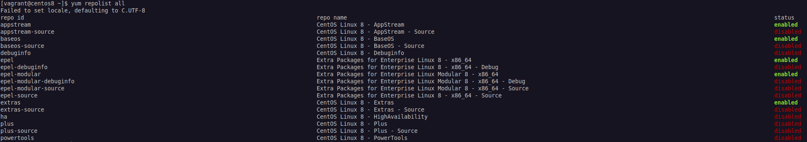

Toda distribuição pode trabalhar com sistema de instalação de aplicações em 2 níveis, o primeiro é o nível local e o segundo é o nivel remoto ou online. No local o pacote (aplicação que será instalada), está localmente na máquina, não tendo que baixar ela e na online/remoto, devemos primeiro baixar o pacote de um repositório (diretório onde ficam armazenados as aplicações) para que ele seja instalado.
O rpm é o gerenciador de pacotes locais na máquina, não podendo efetuar a instalação de pacotes que estejam em reposítorios online.
A sintaxe das opções é -q de --query mais uma letra, que é a representação resumida, tipo -qa é igual a --query --all, -qi é --query --install, -ql é --query --list, -qc é --query --configfiles.
Opções:
| Comando | Descrição |
|---|---|
| rpm -qa | Mostra os pacotes instalados. (--all) |
| rpm -qi <pacote.rpm> ou <pacote> | Mostra informações do pacote. |
| rpm -ql <pacote> | Mostra os arquivos contidos dentro do pacote, seja .rpm ou instalado. (-l,--list) |
| rpm -qc <pacote> | Mostra arquivos de configuração seja .rpm ou instalado.(--configfiles) |
| rpm -qd <pacote> | Mostra arquivos de documentação seja .rpm ou instalado. (-d,--docfiles) |
| rpm -qf <file> | Mostra qual pacote gerou esse arquivo. (--file) |
| rpm -qlp <pacote.rpm> | Lista os arquivos do pacote, igual rpm -ql. (--package)O p no meio fa flag informa que o pacote ainda não está instalado e habilita o auto-completion |
| rpm -i <pacote.rpm> | Instala o pacote. (--install) |
| rpm -U <pacote.rpm> | Faz um upgrade do pacote. (--upgrade). Se não houver uma versão anterior do PACKAGENAME, uma nova cópia será instalada. Para evitar isso e apenas atualizar um pacote que esteja instalado, use a opção -F. |
| Os parâmetros devem ser usados com as opções acima | |
| -v | Verbose. |
| -h | Progresso da instalação. (--hash, use com -v) |
| --nodeps <pacote.rpm> | Ignora dependências. |
| --force <pacote.rpm> | Força a instalação. |
| --test <pacote.rpm> | Testa a instalação, mas nao instala. |
| -e <pacote> | Desinstala o pacote (e=--erase). Pode ser usado direto com rpm. |
| --checksig <pacote.rpm> | Verifica o signatures (pode ser usado direto com rpm) |
| -V <pacote.rpm> | Trás algumas informações do pacote como libs, dependências insatisfeitas, mostra arquivos de documentação, de configuração entre outros Se não tiver nada OK, se tiver OK não vai exibir nada. |
| --verify <pacote.rpm> ou <pacote> | Exibe informações sobre alteração nos arquivos. Segue o que ele pode exibir, são coisas que ele monitora nos arquivos do pacote: S file Size differs M Mode differs (includes permissions and file type) 5 digest (formerly MD5 sum) differs D Device major/minor number mismatch L readLink(2) path mismatch U User ownership differs G Group ownership differs T mTime differs P caPabilities differ |
| -qR <pacote> ou <pacote.rpm> | Mostra apenas as dependências. (--requires) |
O gerenciador yum é usado para fazer o gerenciamento de pacotes online.
Os arquivos de configuração do yum ficam em /etc/yum.conf e /etc/yum.repos.d (aqui ficam os mirros do CentOS).
| Comandos | Descrição |
|---|---|
| yum update | Atualiza todos os pacotes (diferente do Debian). |
| yum upgrade | Mesma coisa acima, mas remove pacotes marcados como obsoletos. (perigoso) |
| yum install <pacote> | Instala um pacote. |
| yum check-update | Igual apt-get update (atualiza os mirrors). |
| yum list --installed | Lista tudo que está instalado. |
| yum search <pacote> | Busca por um pacote. |
| yum remove <pacote> | Remove um pacote. |
| yum erase <pacote> | Remove um pacote e os arquivos de configuração. |
| yum install --downloadonly <pacote> | Apenas baixa num diretório temporário, pode usar a opção --downloaddir=Diretório para salvar nesse diretório. |
| yum whatprovides <arquivo> | Mostra qual pacote fornece esse arquivo, pode ser um pacote, uma lib. |
| yum info <pacote> | Obtém informações sobre um pacote. |
Para o yum, os "repos" estão listados no diretório /etc/yum.repos.d/. Cada repositório é representado por um arquivo .repo, como CentOS-Base.repo.
Repositórios adicionais podem ser incluídos pelo usuário acrescentando um arquivo .repo no diretório mencionado acima, ou no final de /etc/yum.conf. No entanto, a maneira recomendada de adicionar ou gerenciar repositórios é usar a ferramenta yum-config-manager.
Para adicionar um repositório, use o parâmetro --add-repo, seguido da URL para um arquivo .repo.
xxxxxxxxxxyum-config-manager --add-repo https://rpms.remirepo.net/enterprise/remi.repoPara obter uma lista de todos os repositórios disponíveis, use yum repolist all. A saída obtida será semelhante a esta:

Habilitando e Desabilitando Repos:
xxxxxxxxxx# Desabilitando:$ sudo yum-config-manager --disable powertools# Habilitando:$ sudo yum-config-manager --enable powertoolsO Yum armazena os pacotes baixados e os metadados associados em um diretório de cache (geralmente
/var/cache/yum). À medida que o sistema é atualizado e novos pacotes são instalados, essa cache pode ficar bem grande. Para limpar a cache e recuperar o espaço em disco, podemos usar o comandoyum clean, seguido pelo que deve ser removido. Os parâmetros mais úteis sãopackages(yum clean packages) para excluir pacotes baixados emetadata(yum clean metadata) para excluir os metadados associados. Consulte a página de manual doyum(digiteman yum) para obter mais informações.
É o mesmo gerenciador que o yum, mas possui um melhor desempenho, melhor consumo de memória ram e melhor resoluçõa de dependências. Ambos os comandos yum e dnf são links para o verdadeiro comando (binário) chamado dnf-3 no CentOS 8, esse novo binário tem a mesma função do yum, só muda o nome e o backend do binário, inclusive as opções são as mesmas.
xxxxxxxxxx# Verificando o yum:[vagrant@centos8 ~]$ ls -lh /usr/bin/yumlrwxrwxrwx. 1 root root 5 Aug 4 2020 /usr/bin/yum -> dnf-3# Verificando o DNF:[vagrant@centos8 ~]$ ls -lh /usr/bin/dnflrwxrwxrwx. 1 root root 5 Aug 4 2020 /usr/bin/dnf -> dnf-3# Verificando o binário dnf-3:[vagrant@centos8 ~]$ ls -lh /usr/bin/dnf-3 -rwxr-xr-x. 1 root root 2.0K Aug 4 2020 /usr/bin/dnf-3Para adicionar um repositório, use dnf config-manager --add_repo URL, onde URL é a URL completa do repositório. Para habilitar um repositório, use dnf config-manager --set-enabled REPO_ID.
Da mesma forma, para desativar um repositório, use dnf config-manager --set-disabled REPO_ID. Nos dois casos, REPO_ID é o ID exclusivo do repositório, que pode ser obtido com dnf repolist. Os repositórios adicionados são ativados por padrão. Os repositórios são armazenados em arquivos .repo no diretório /etc/yum.repos.d/, com exatamente a mesma sintaxe usada para o yum.
O gerenciador zypper é usado para fazer o gerenciamento de pacotes online. Como distros Suse e baseadas também usam pacotes .rpm, vamos ver um pouco da sintaxe do gerenciador de pacotes usado em distros Suse.
Comandos:
| Comandos | Descrição |
|---|---|
| zypper <repos ou ls> | Lista os repositórios atuais. Os repos ficam em /etc/zypper/repos.d/ |
| zypper install <pacote> | Instala o pacote. |
| zypper remove <pacote> | Remove o pacote. |
| zypper verify <pacote> | Verifica a integridade. |
| zypper update | Atualiza todos os pacotes. |
| zypper list-update | Lista as atualizações |
| zypper refresh | Mesmo que update no Debian. |
| zypper dist-upgrade | Usado para fazer uma atualização da Distribuição Linux. |
| zypper search <pacote> | Pesquisa pelo pacote |
| zypper info <pacote> | Exibe informações de um pacote específico |
| zypper search --provides <arquivo> | Para ver quais pacotes contêm um arquivo específico |
| zypper search -i <pacote> | Confere se o pacote esta instalado. |